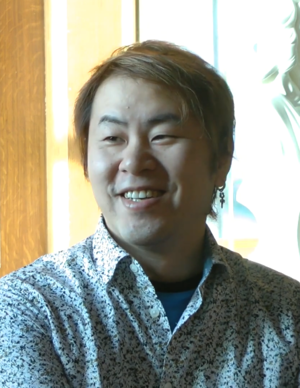

Hiro Mashima nació el 3 de mayo de 1977 en Nagano, Japón. Desde joven mostró interés en el manga y se inspiró en las obras de Akira Toriyama y Hayao Miyazaki. Mashima comenzó su carrera profesional en 1998 con la serie Rave Master, que se publicó en la revista Weekly Shōnen Magazine.
En 2006, Mashima lanzó Fairy Tail, que rápidamente ganó popularidad mundial y se convirtió en una de las series de manga más vendidas. Su éxito le permitió explorar nuevas historias y estilos, manteniendo siempre su característico enfoque en la amistad y la aventura.
El estilo de arte de Mashima es conocido por su dinamismo y expresividad, influenciado por sus ídolos como Akira Toriyama y el género shōnen. Sus obras a menudo presentan personajes con fuertes vínculos de amistad y aventuras épicas.
Mashima ha declarado en varias entrevistas que su enfoque en la creación de personajes proviene de su deseo de que sus lectores se conecten emocionalmente con las historias. La acción rápida y los elementos mágicos son sellos distintivos de su estilo.
A lo largo de su carrera, Hiro Mashima ha ganado varios premios, incluyendo el Kodansha Manga Award por Fairy Tail en 2009. También ha sido reconocido por su contribución al mundo del manga y su impacto en la cultura popular.
En 2018, Mashima recibió el Premio Harvey a la Mejor Serie Internacional por Fairy Tail, destacando su influencia global en la industria del cómic.
Varias de sus obras han sido adaptadas al anime, incluyendo Fairy Tail y Edens Zero. Estas adaptaciones han ayudado a popularizar aún más su trabajo y a llegar a una audiencia más amplia a nivel internacional.
Las adaptaciones de sus mangas han permitido que las historias de Mashima sean disfrutadas en diferentes formatos, incluyendo videojuegos, novelas ligeras y obras de teatro.
(1999-2005) - Narra la historia de Haru Glory en su búsqueda de las piedras Rave para salvar al mundo de las fuerzas oscuras. Esta serie también fue adaptada al anime, aunque con una duración más corta que el manga.
(2006-2017) - Una serie de manga que sigue las aventuras de un gremio de magos y sus misiones peligrosas y emocionantes. Adaptada a anime y diversos OVAs, Fairy Tail también ha tenido varias películas de animación.
(2018-presente) - Un manga de ciencia ficción sobre las aventuras espaciales de Shiki Granbell y sus amigos mientras exploran el cosmos. Edens Zero ha sido adaptada a anime, destacando por su mezcla de ciencia ficción y elementos de fantasía.